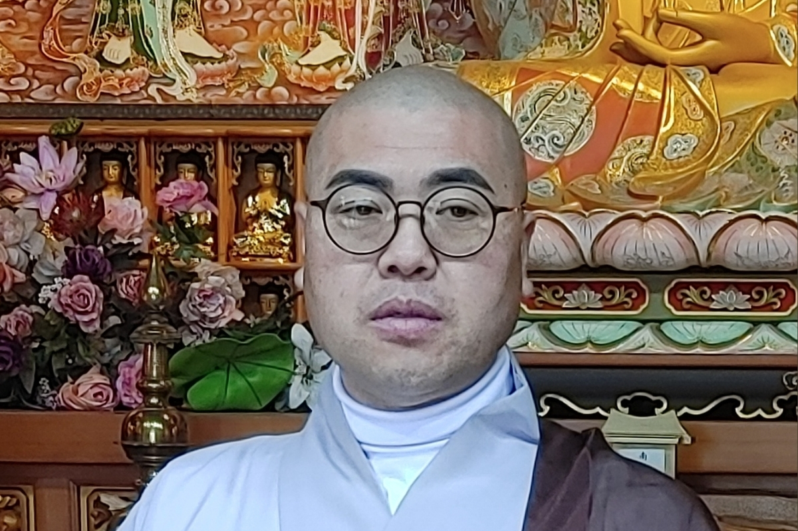

기도와 수행
정기법회와 기도 프로그램을 통해 신도님들의 신행 생활을 돕고, 마음의 평안을 찾을 수 있는 수행 환경을 마련합니다.
마음을 밝히는 수행도량, 개운사를 소개합니다.
마음을 밝히는 수행도량, 개운사는 신도님들과 함께 기도와 수행, 나눔과 불교문화를 이어가는 지역 불교 공동체입니다.
개운사는 부처님의 가르침을 바탕으로 기도와 수행을 실천하고, 신도님들과 지역사회가 함께 소통하는 열린 도량을 지향합니다. 현재 소개 문구는 홈페이지 제작을 위한 기본 구성으로, 실제 사찰 연혁과 주지스님 인사말 자료가 확보되면 정식 내용으로 교체할 예정입니다.
개운사의 공간과 수행 공동체의 모습을 사진으로 소개합니다.

도심 속에서 마음을 쉬어갈 수 있는 개운사의 사찰 공간입니다.

부처님의 가르침을 바탕으로 신도님들과 함께 기도와 수행을 이어갑니다.
기도, 수행, 나눔, 문화 전승을 중심으로 사찰의 역할을 이어갑니다.
정기법회와 기도 프로그램을 통해 신도님들의 신행 생활을 돕고, 마음의 평안을 찾을 수 있는 수행 환경을 마련합니다.
지역사회와 함께하는 나눔 활동을 통해 불교의 자비 정신을 실천하고, 이웃과 더불어 살아가는 공동체를 만들어갑니다.
불교문화와 사찰 예절, 전통 행사를 통해 세대가 함께 배우고 경험할 수 있는 문화 공간을 지향합니다.
개운사의 실제 연혁, 창건 배경, 주지스님 인사말, 대표 사진, 법회 일정, 주소와 연락처 자료가 확보되면 본 페이지에 정식으로 반영할 예정입니다.